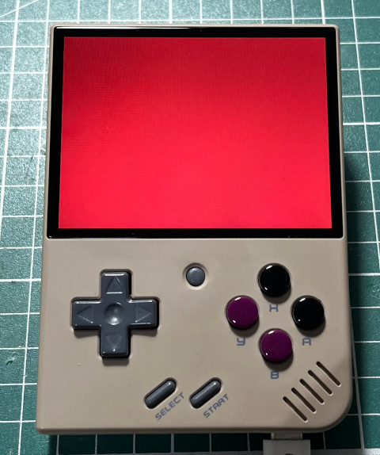

main.c
#include <stdio.h>
#include <stdlib.h>
#include <SDL2/SDL.h>
#include <GLES2/gl2.h>
const char *vShaderSrc = "void main(void){}";
const char *fShaderSrc = "void main(void){}";
int main(int argc, char **argv)
{
SDL_Window *window = NULL;
SDL_GLContext context = {0};
SDL_Init(SDL_INIT_VIDEO);
SDL_GL_SetAttribute(SDL_GL_CONTEXT_PROFILE_MASK, SDL_GL_CONTEXT_PROFILE_ES);
SDL_GL_SetAttribute(SDL_GL_CONTEXT_MAJOR_VERSION, 2);
SDL_GL_SetAttribute(SDL_GL_CONTEXT_MINOR_VERSION, 0);
window = SDL_CreateWindow("main", 0, 0, 320, 240, SDL_WINDOW_OPENGL);
context = SDL_GL_CreateContext(window);
GLuint vShader = 0;
GLuint fShader = 0;
GLuint pObject = 0;
vShader = glCreateShader(GL_VERTEX_SHADER);
glShaderSource(vShader, 1, &vShaderSrc, NULL);
glCompileShader(vShader);
fShader = glCreateShader(GL_FRAGMENT_SHADER);
glShaderSource(fShader, 1, &fShaderSrc, NULL);
glCompileShader(fShader);
pObject = glCreateProgram();
glAttachShader(pObject, vShader);
glAttachShader(pObject, fShader);
glLinkProgram(pObject);
glUseProgram(pObject);
glViewport(0, 0, 320, 240);
glClearColor(1.0f, 0.0f, 0.0f, 1.0f);
glClear(GL_COLOR_BUFFER_BIT);
SDL_GL_SwapWindow(window);
SDL_Delay(30000);
SDL_DestroyWindow(window);
SDL_GL_DeleteContext(context);
SDL_Quit();
return 0;
}
編譯、執行
$ /opt/mini/bin/arm-linux-gnueabihf-gcc \
-I/opt/mini/arm-buildroot-linux-gnueabihf/sysroot/usr/include/SDL2 \
-lSDL2 -lSDL2_gfx -lSDL2_image -lSDL2_ttf -lSDL2_mixer -lGLESv2 \
main.c -o main
# kill -STOP `pidof MainUI`
# LD_LIBRARY_PATH=.:/config/lib:/customer/lib ./main
# kill -CONT `pidof MainUI`
